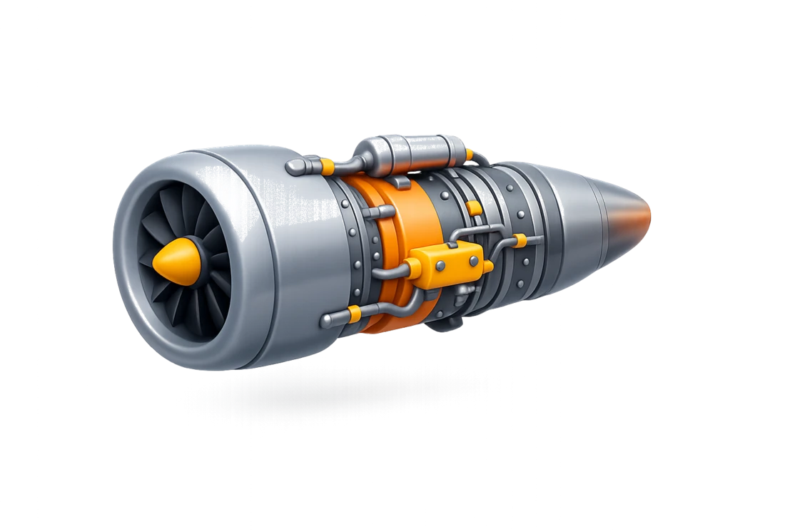
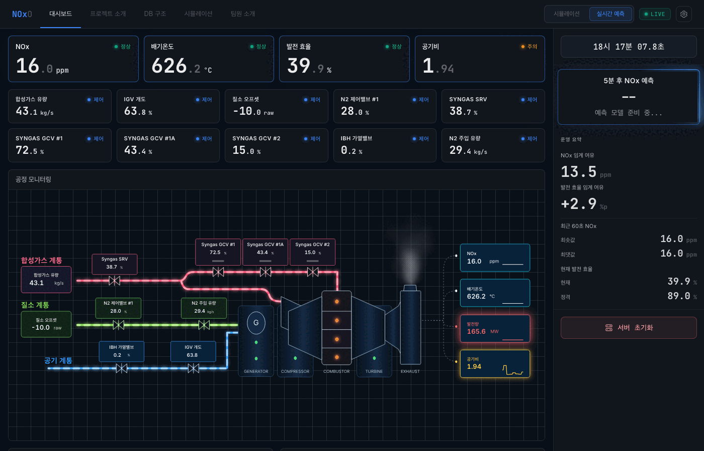

IGCC 발전소에서 운전 조건을 바꿨을 때 NOx가 어떻게 달라지는지 미리 가늠하는 프로젝트. 현장 시뮬레이션용 예측기와 5분 후 조기경보 예보기를 나눠 설계했고, 핵심은 높은 수치보다 현장에서 쓸 수 있는, 누수 없는 예측 구조를 만드는 일이었다.
Role데이터 분석 · 모델링 · 검증
Domain가스터빈 NOx
StackPython · Ridge · LightGBM
Year2026
3D turbine render
clay control deck
soft industrial blue
Interface Mood3D + Clay
Project ThemeIndustrial Simulation

0.71
시뮬레이션 NOx R²
0.68
5분 예보 R²
+0.21
직전값 유지 기준 대비 개선
27.7ms
예보 추론 시간
01 — Problem
같은 발전소 데이터여도 현장에서 필요한 질문은 둘이었다.
"제어밸브를 바꾸면 NOx가 어떻게 되나"라는 시뮬레이션 질문과 "지금 이대로면 5분 뒤 NOx는?"이라는 조기경보 질문. 입력·갱신 주기·평가가 전혀 달라 하나로 묶지 않고 둘로 분리해 설계했다.
모델 1
운전 시뮬레이션 예측기
질문제어값을 바꾸면 NOx는?
입력제어변수 override · 1분 집계
타겟NOx · DWATT · TTXM
갱신온디맨드 시뮬레이션
모델 2
5분 후 NOx 예보기
질문5분 뒤 NOx는?
입력과거 이력 · 1초 원시
타겟5분 후 NOx 점예측
갱신매 1초 실시간 경보
02 — Model 1 · Simulation
1초 데이터를 그대로 쓰면 모델이 과거값을 베끼기 쉬웠다.
1초 데이터는 인접 값이 거의 같아(자기상관 r=0.989) 모델이 과거값을 복사하기 쉽다. 그래서 1분 평균으로 집계해 의미 있는 변동만 남기고, 원시 39개 + 파생 10개 = 49개 피처에 Ridge + LightGBM 앙상블을 썼다. NOx R²가 0.71에 머문 건 변동 폭이 워낙 작기 때문이다(std ≈ 0.19 ppm).
0.71
NOx R²
0.999
DWATT R²
0.997
TTXM R²
실제 대시보드 · 시뮬레이션 모드
03 — Model 2 · 5-min Forecast
조기경보는 평균값보다 순간적인 흔들림을 살리는 쪽이었다.
1분 평균은 미세 변동이 사라져 5분 점예측이 안 됐다. 그래서 1초 원시 데이터를 유지한 채 5분 뒤 값을 직접 맞히는 구조로 바꾸고, 시차·차분·이동통계·상호작용·시간 피처까지 213개를 구성했다.
0.49
O₂ 완전 제외 누수 차단 기준선
0.625
피처 엔지니어링 O₂ 없이
0.68
O₂ 재포함 누수 아님 확인
0.68
5분 예보 R²
27.7ms
추론 (예산 50ms)
213
features
실제 대시보드 · 실시간 예측 모드

04 — Key Challenge · Data Leakage
0.997
"너무 좋다"는 의심에서 시작했다.
O₂ 센서가 NOx와 상관 0.997, 성능이 R²≈0.99까지 치솟았다. 그대로 믿는 대신 원인을 팠다 — CEMS 희석보정식에서 O₂가 NOx 라벨 계산에 직접 들어간다. 정답 일부를 보고 맞히는 셈이었다.
NOx = NOx_raw × (21 − ref) / (21 − O₂)
모델 1 처리
현재 O₂ 제외 → 과거 O₂만
제어 시나리오에선 O₂도 함께 바뀐다. 현재 O₂는 미래 정보다. 현재값을 빼고 과거 lag·물리 변환으로 대체했다.
≈0.99→ 누수 제거≈0.71
모델 2 처리
O₂ 현재값은 미래 정보 아님을 논증
5분 후 예측에서 O₂(t)는 이미 관측된 현재값. 미래 정보가 아님을 확인하고 재포함해 0.49→0.68로 끌어올렸다.
0.49→ 재포함≈0.68
05 — Validation & Outcome
점수가 새지 않도록 검증을 먼저 설계했다.
Holdout
마지막 하루를 통째로 떼어 최종 테스트로만 사용. 학습은 그 전 14일치만, holdout은 모델 선택에 일절 쓰지 않았다.
CV 방식
시계열이라 무작위 split 금지. Expanding-window CV로 미래 정보가 과거로 새지 않게 했다.
Gap
학습/검증 사이 300초 간격을 둬 직전 값 복사만으로 점수가 부풀지 않게 했다.
타겟 생성
5분 후 타겟은 각 split 내부에서만 생성해 경계를 분리했다.
직전값 유지 기준 대비
0.46 → 0.68 (+0.21)
"5분 뒤 = 지금 값"으로 찍어도 R²≈0.46. 그래서 절대 R²가 아니라 기준 모델 대비 개선폭으로 가치를 판단했다.
R² 0.9는 왜 안 나오나
정상운전 구간의 한계
이 15일치는 NOx 변동이 거의 없는 정상운전 구간이라 절대 R²를 올릴 여지가 작다. 부하 변동·시동/정지 데이터가 있어야 0.9급이 가능하다.
점수를 밀어 올리는 것보다 무엇을 입력으로 써도 되는지, 무엇과 비교해야 하는지를 정하는 일이 더 중요했다. 핵심은 누수 없는 비교 기준을 세우는 일이었다.